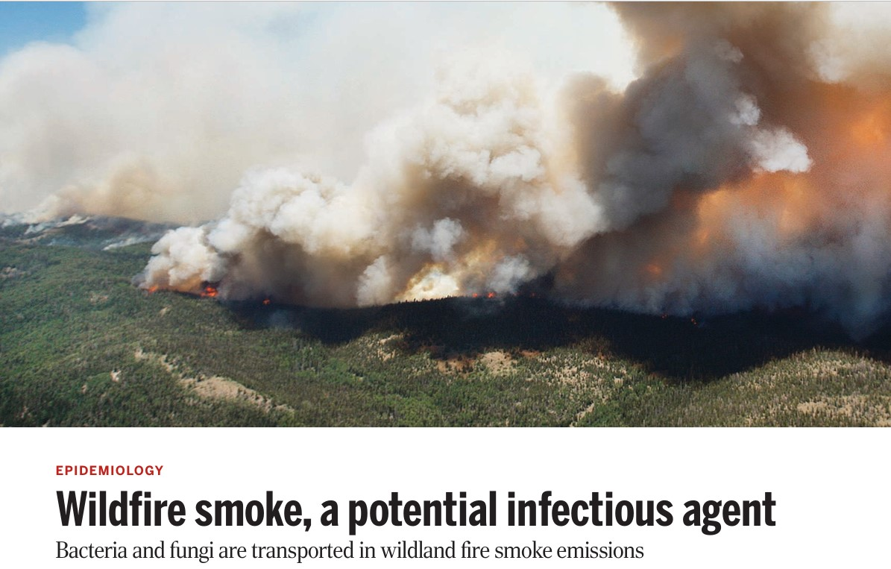
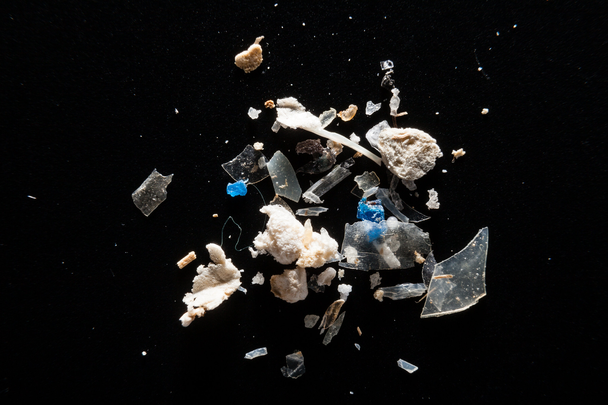
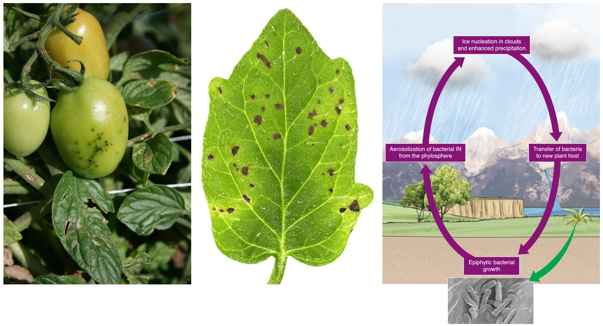
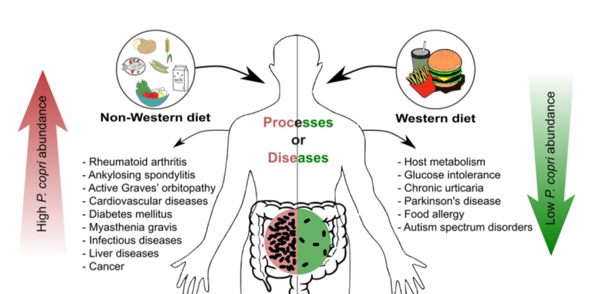

This is part 2 in a series covering surprising facts about the microbiome. Be sure to check out part 1 here. A microbiome is the community of microorganisms found living together in a given habitat. The microbiome of the human gut can contribute to development of autoimmune disease. The microbiome of plant roots can include bacteria traveling on fungal super-highways. Scientists also study the microbiome of nanoplastics floating in the ocean and the tiny microbes throughout our atmosphere that catalyze precipitation. Microbiomes influence food chains, weather patterns, and the human immune system.
Microbes are everywhere
When I lived in California there were several years in which we had widespread wildfire smoke that was harmful to breathe, polluted the air, and created an eerie yellow hue. I knew that smoke contains toxins, and I incorrectly assumed that it wouldn’t be a suitable habitat for anything living. Counter-intuitively, smoke is a good habitat for some microbes, as the particulate matter helps block UV rays that might otherwise kill them. Water vapor produced by the combustion of biomass can help prevent microbes from drying out. And convective columns and updraft winds can draw in microbes from long distances.

One study on the California wildfires found that hospitalizations for coccidioidomycosis, a dangerous fungal infection, increased by 20% in the month following smoke exposure. This is a worrying threat given that the climate crisis has led to increasing frequency and intensity of wildfires. There is even a nascent field of pyroaerobiology, studying the aerosolization and transport of microbes by wildfires.
An estimated 5-13 million tons of plastic enter the oceans each year, including run-off from polluted rivers. Floating “islands” of plastic debris, including microplastics less than 5 mm in size, are found in the oceans. These plastics impact over 700 different species of aquatic life, ranging from microscopic phytoplankton to large whales. There are microbes that thrive on microplastics, forming the Plastisphere. Unfortunately, this thin film of bacteria and fungi living on microplastics may make them more appealing to some sea animals, such as loggerhead turtles, to eat. Researchers have found that the Atlantic and Pacific oceans have distinct Plastisphere communities, and that these differences may necessitate different remediation approaches.

Researchers are also investigating how microbes can be used to break down these dangerous plastics. One interesting research study collated data on over 16,000 genes involved in plastic degradation. These genes came from 6,000 microbial species, showing that there are numerous possibilities of potential microbes that may be used for bioremediation. Researchers have even found some microbes can be used to help break down PFAS, often called “forever chemicals”, which are polluting aquatic environments. While it is very difficult to break down the fluorine-carbon bonds found in PFAS, microbes can instead first break chlorine-carbon bonds in the chemicals, which then makes it easier to remove the fluorine atoms.
There is no clear “good” vs. “bad” for microbes
Pseudomonas syringae is a plant pathogen that is a scourge of agricultural crops. It infects almost all economically valuable species of crops and threatens global agriculture production.
But actually it’s not all bad – this same species of bacteria is important to weather precipitation cycles. For temperatures above -40 degrees C, ice formation requires a catalyst, called an ice nucleator. Researchers have discovered that most ice nucleators are biological: tiny microbes that are widely dispersed throughout the atmosphere all over the world, even in Antarctica! And it turns out that Pseudomonas syringae is a common nucleator for catalyzing precipitation. This example highlights the complexity of microbial ecosystems. Efforts to protect plants from this pathogen must take into account the interrelated impact on precipitation.

Another example of a microbe that can’t be clearly classified as “good” or “bad” is Prevotella Copri, found in the human gut microbiome. An aptly titled paper, “The curious case of Prevotella copri” describes “puzzling discrepancies” in how various research studies have associated this species with a range of positive and negative impacts on disease.
The authors share that high abundance of P. copri is associated with non-Western diets, rheumatoid arthritis, Ankylosing spondylitis (a type of inflammatory arthritis), Graves’ orbitopathy (autoimmune condition that can damage vision vision), diabetes mellitus, and cancer. This is particularly surprising, because several of the inflammatory and autoimmune conditions listed are more strongly associated with Western diets. Low abundance of P. copri is associated with Western diets, glucose intolerance, chronic hives, Parkinson’s disease, and food allergies.

It is unclear whether abundant Prevotella copri in the gut is good or bad. The paper notes that P. copri has a diverse set of strains, which differ from the reference strain, and may partly explain the discrepancies. The ways that gut microbes interact with each other, our immune systems, and our genetics can be quite complex, and these factors may mediate how P. copri influences a person’s health.
More to learn
Understanding the microbiome is a crucial piece of better understanding the health of plants, humans, and other animals, as well as our environment. Microbes synthesize vitamins, catalyze precipitation, spread disease or protect from it, can remediate or exacerbate the impacts of pollution, and influence food chains. Only with relatively recent advances in genomic sequencing have we been able to better study and compare the balance of species composing different microbiomes. This is a fascinating and growing area of research.
I look forward to reading your responses. Create a free GitHub account to comment below.